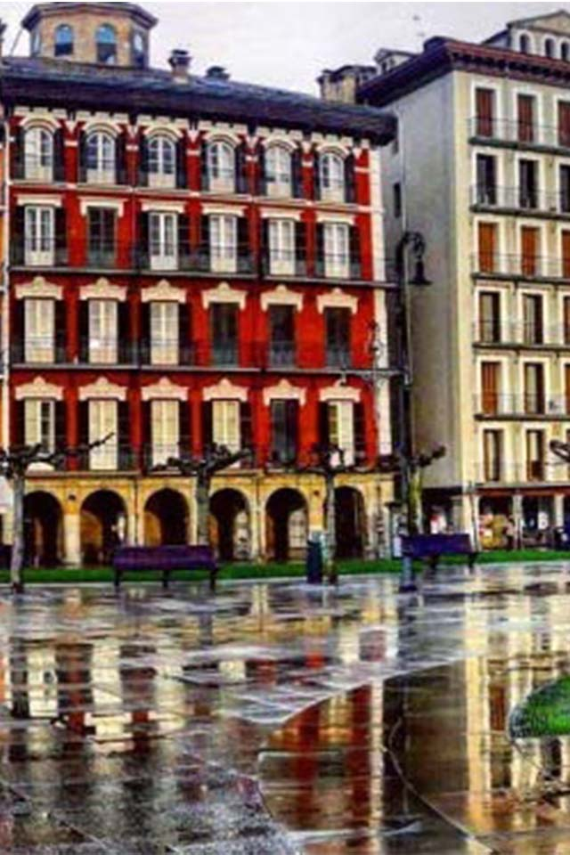
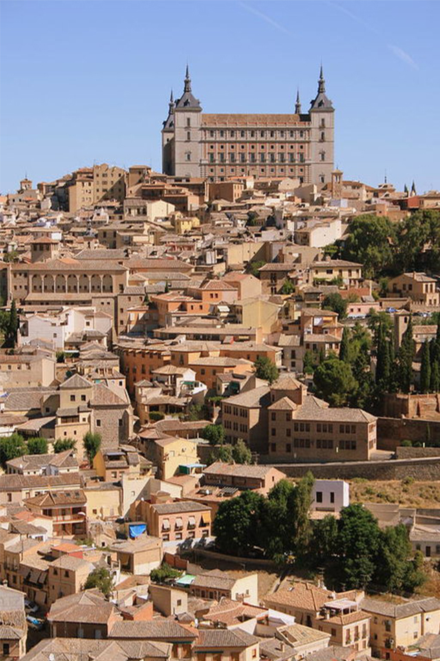

España
El Pais de la Alegría
Descripción:
España es un país turístico con una desarrollada infraestructura en el sector servicios, situándose entre los tres más visitados del mundo, al que acuden anualmente millones de viajeros atraídos por sus playas y agradable clima, el abundante patrimonio artístico del país y la riqueza gastronómica, además de ser una de las naciones más ricas en patrimonio cultural del planeta debido al gran número de civilizaciones que dejaron su impronta y legado en la península ibérica.
Debido a la diversidad de productos y regiones que posee España, existen muchas cocinas y platos que se forman parte de su amplia cultura gastronómica, algo muy caracteristico de España.